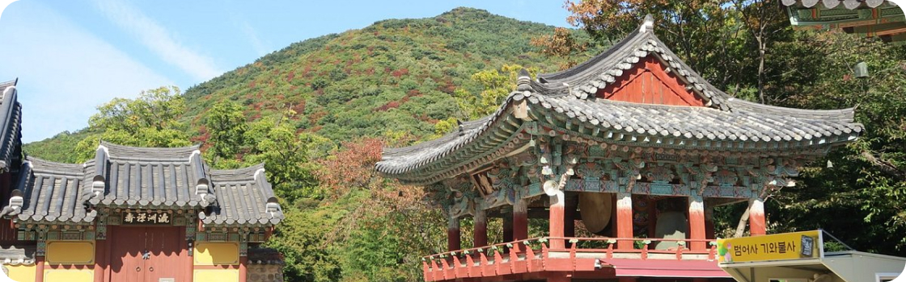

Descubra 3 destinos imperdíveis em Busan
As atrações de Busan vão desde templos budistas centenários que pontilham as montanhas e o litoral da cidade até praias imaculadas com águas cristalinas. Esta cidade litorânea tem muitas coisas para fazer o ano todo - as famílias podem passar o tempo em um aquário à beira-mar, os compradores podem explorar bairros vibrantes e os amantes da natureza podem desfrutar de longas caminhadas até mirantes panorâmicos. Os santuários budistas que pontilham a costa e as montanhas de Busan têm uma arquitetura impressionante que irá encantar os fotógrafos.
- Templo Haedong Yonggungsa O Templo Haedong Yonggungsa é um templo budista localizado no extremo nordeste de Busan. Construído em 1376, é um dos poucos templos na Coreia construídos à beira-mar – você pode desfrutar de vistas do Mar do Leste de um lado e de belas montanhas do outro.
- Templo Beomeo-sa O Templo Beomeo-sa é um dos maiores santuários da Coreia do Sul. Ele está localizado no alto da borda leste da montanha Geumjeongsa e fica distante da agitação da cidade. O Daeungjeon Hall do templo é um exemplo bem preservado da arquitetura da Dinastia Joseon.
- Parque Yongdusan O Parque Yongdusan, localizado no centro de Busan, abriga alguns dos monumentos mais importantes da cidade. Você pode ver vistas espetaculares do topo da Torre Busan, de 120 metros de altura. O parque tem 2 museus – confira os instrumentos musicais tradicionais no Museum of World Folk Instruments e mais de 80 veleiros coreanos no Exhibition Hall of World Model Boats.
Bom para:
・História

Bom para:
・História

Bom para:
・Casais
・Famílias
・Orçamento